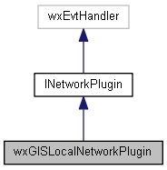
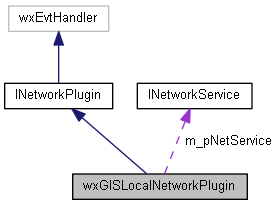

|
|
Version: 0.6.0 |


wxGISLocalNetworkPlugin Class Reference
#include <net.h>
Inheritance diagram for wxGISLocalNetworkPlugin:

Collaboration diagram for wxGISLocalNetworkPlugin:

Public Member Functions | |
| bool | CreateListenSocket (void) |
| virtual bool | Start (INetService *pNetService, const wxXmlNode *pConfig) |
| virtual bool | Stop (void) |
| virtual void | OnTCPServerEvent (wxSocketEvent &event) |
Protected Attributes | |
| int | m_nPort |
| wxString | m_sAddr |
| INetService * | m_pNetService |
| wxSocketServer * | m_listeningSocket |
Detailed Description
A Server side Network Plugin.
Library: wxGISNet
The documentation for this class was generated from the following files:
- /home/bishop/work/projects/nextgismanager/include/wxgis/tskmngr_app/net.h
- /home/bishop/work/projects/nextgismanager/src/tskmngr_app/net.cpp
- Generated on Fri Sep 26 2014 01:11:02 for ngm by
 1.8.6
1.8.6